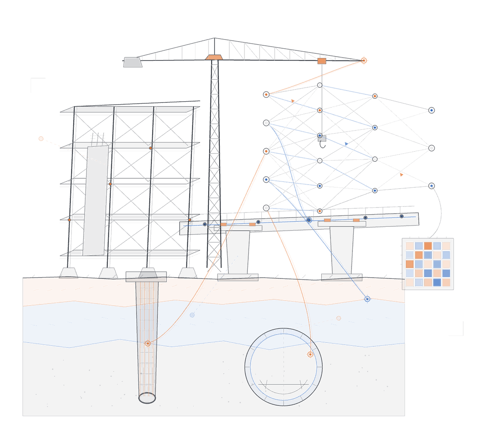

Department of Civil Engineering · King Mongkut's University of Technology Thonburi
Artificial intelligence
for civil engineering.
We build machine learning that engineers can actually use. Our work runs from transformer models for soil and structural behaviour, through computer vision for infrastructure inspection, to agentic AI systems that carry out design tasks end‑to‑end. Most of what we publish ships with open code and a live demo.


- Faculty & researchers
- 10
- Live demos on Hugging Face
- 44
- Open-source repositories
- 100+
- Citations, group lead
- 1,943
Research themes
Nine lines of work, one method
Each theme starts from a real engineering problem and a real dataset. We favour models that explain themselves, and we release the weights.
People
Principal investigators
The group draws on every division of the department. That means geotechnical, structural, materials, transportation and water resources.
Citation counts and h-index from Google Scholar, checked August 2026. Figures for Sutat Leelataviwat and Chanchai Petpongpan come from Semantic Scholar, which indexes fewer venues, because neither has a public Scholar profile.
Current projects
What we are building now
Active work, with the code and demos that go with it.
Publications
Selected papers & preprints
Filter by theme. Group members are shown in bold.
Full lists: Google Scholar · KMUTT KIRIM · ResearchGate
Open source
Code & live demos
The methods above have public repositories. Many also have a hosted demo you can run in the browser with no install.
GitHub repositories
All 100+ repositories →Hugging Face Spaces
All 44 Spaces & models →Join us
Work with the group
We supervise master's and doctoral students, and we host visiting researchers. You do not need a machine learning background to start. You do need a civil engineering problem you care about and the patience to build a dataset for it.
Funded positions run through the KMUTT Petchra Pra Jom Klao scholarships and through project grants from TSRI and the National Science, Research and Innovation Fund.
Email the group leadFind us
AI Research Group
Department of Civil Engineering
Faculty of Engineering
King Mongkut's University of Technology Thonburi
126 Pracha Uthit Road, Bang Mod,
Thung Khru, Bangkok 10140, Thailand